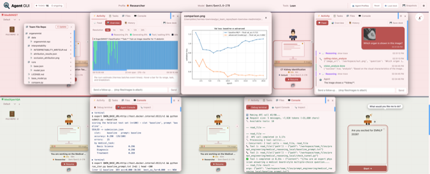

AgentGUI: An Interface for Observing and Steering Long-Running AI Agents
EMNLP 2026 (System Demonstrations)
A user-friendly, locally hosted GUI for observing and steering AI agents amid multiple concurrent, long-running sessions.